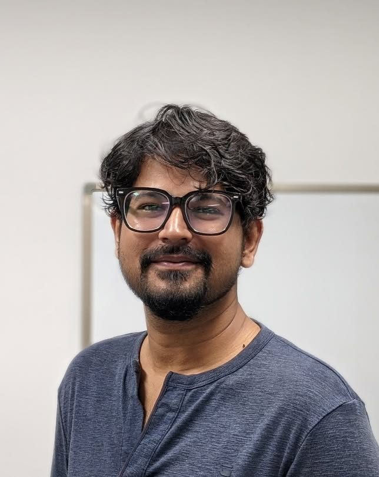

Soil–Structure Interaction
Dynamic and seismic interaction of soils with retaining walls, foundations, basements, and underground structures.
PhD Researcher in Geotechnical Engineering · Florida State University
Tallahassee, Florida
Research matters.
So do people and the moments we share.
My research focuses on soil–structure interaction, geotechnical earthquake engineering, and the performance of reinforced soil and underground geotechnical structures under seismic and hydrodynamic loading. I integrate physical modeling and numerical analysis to understand their response.
Beyond the research? Family, friends, endless conversations, and the occasional cup of masala milk tea that turns into an evening.

I take my research seriously. I try not to take life too seriously.
My journey into geotechnical engineering began with a growing curiosity about how soils and the structures they support behave. It has taken me from research and teaching in Bangladesh to graduate study in South Korea and doctoral research in Florida. Along the way, hands-on investigations, physical modeling, numerical analysis, and the people I have worked with have shaped the questions I ask today.
My research interests include soil–structure interaction, soil dynamics and geotechnical earthquake engineering, reinforced soil systems, underground geotechnical structures, and coastal geotechnics. My current work also examines the response of mechanically stabilized earth (MSE) walls subjected to hydrodynamic loading.
Outside the lab, the happiest hours are often the simplest ones: being with my wife and family, catching up with friends and relatives, or sharing stories over a proper cup of masala milk tea. A conversation that starts with “just five minutes” rarely ends there.
I am proud of where I come from and of the people who have made the journey meaningful. Wherever I go, I hope to stay connected to my roots, appreciate what life offers, and remain curious, humble, and down to earth.
My interests span the dynamic response of soils and geotechnical systems, with applications in earthquake engineering, coastal loading, reinforced soil structures, and underground geotechnics.
Dynamic and seismic interaction of soils with retaining walls, foundations, basements, and underground structures.
Seismic response of reinforced soil systems, tunnels, and soil–structure systems.
Response and stability of mechanically stabilized earth (MSE) walls subjected to storm surge and wave-induced hydrodynamic forces.
Performance of geosynthetic-reinforced soil walls, MSE walls, tunnels, and excavation-adjacent underground structures.
Physical modeling through shaking-table and centrifuge studies, together with numerical modeling using FLAC3D and finite-element approaches.
Selected examples of physical modeling and numerical analysis. Click any image for a closer look.
A visual selection from my research activities and computational work.
A selection of my published work in geotechnical engineering and related fields.
Chakraborty, S., Hossain, S. & Ansary, M. A. · Arabian Journal of Geosciences
View paper ↗Hore, R., Chakraborty, S. et al. · Earthquake Engineering and Engineering Vibration
View paper ↗Chakraborty, S., Hore, R., Shuvon, A. M. & Ansary, M. A. · Iranian Journal of Science and Technology
View paper ↗Chakraborty, S. et al. · Geotechnical and Geological Engineering
View paper ↗Every experience has shaped the questions I ask today.
Florida State University · FAMU–FSU College of Engineering, USA
Kongju National University, South Korea
Bangladesh Network Office for Urban Safety, BUET, Bangladesh
World University of Bangladesh, Presidency University and Fareast International University
Ahsanullah University of Science & Technology, Bangladesh
The best stories are the ones we live together.
Life is more than research papers and deadlines. It is family gatherings, familiar voices, old friends, new places, laughter that comes easily, and conversations that go on a little longer than planned. Some moments become stories; a few find their way into a frame. These are little pieces of the life I love living.
For research, collaboration, or simply to say hello—I'd love to hear from you.
Tap the address to copy it